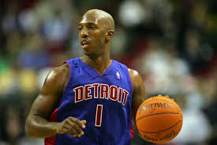
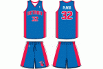
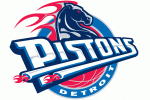
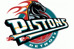
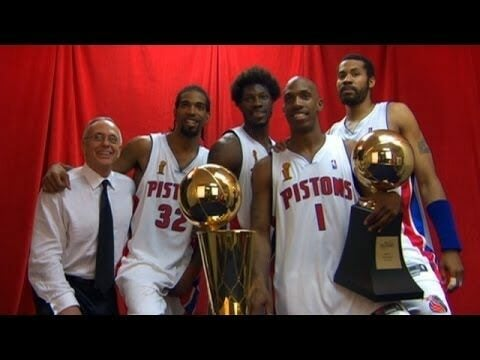
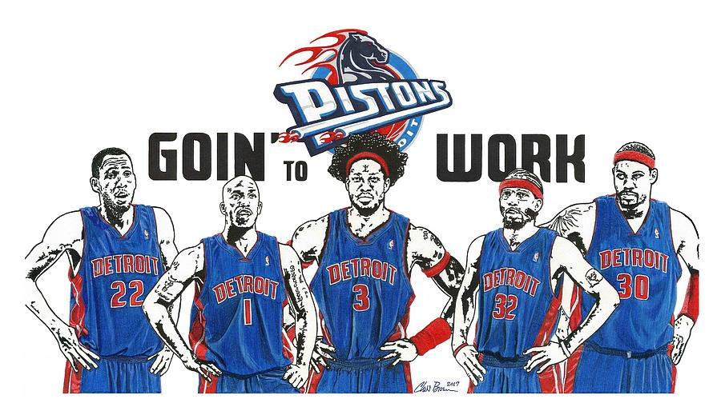
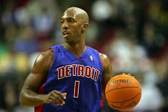
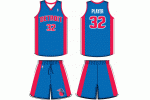
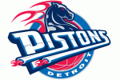
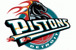
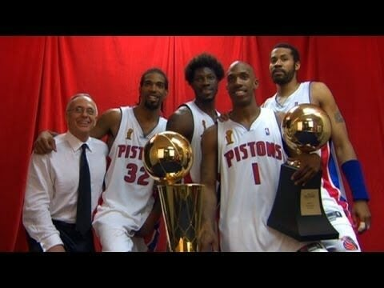
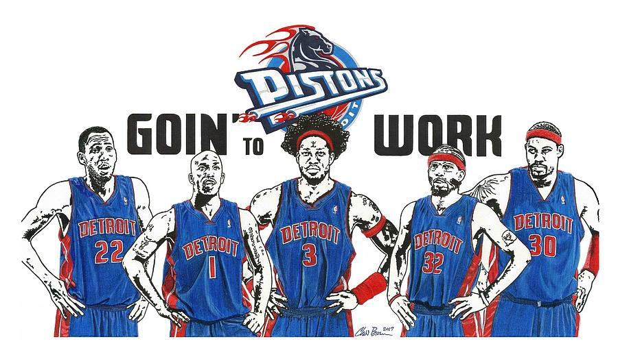
When Joe Dumars was hired by the struggling Detroit Pistons to be team president
after the 1999-2000 season, he couldn’t have predicted what awaited his team four
seasons later. The Pistons had not advanced beyond the first round of the playoffs
since 1991 and had missed the playoffs in four of the previous eight seasons prior to
Dumars’ hiring.Everything was about to change.
In the epitome of team-ball over star power, the Pistons would become one of the most unlikely champions when they defeated a Los Angeles Lakers team sporting four future Hall of Famers 4-1 in the 2004 Finals. The victory is considered one of the greatest upsets in U.S. pro sports history